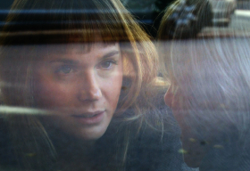

L'Accademia delle Muse
(The Academy of the Muses)
José
Luis Guerín
Spanien 2015
92 min – HD – Spanisch,
Katalanisch, Italienisch – Beste Regie, Cartagena Festival
Deutsche Erstaufführung
B+K+S: José Luis Guerín – Mit Raffaele Pinto, Emanuela
Forgetta, Rosa Delor Muns, Mireia Iniesta
T: Amanda Villavieja – SD: Marisol Nievas, Jordi Monrós – P:
Núria Esquerra, Orfeo Films
Rafaelle Pinto ist Professor für italienische Literatur an der Universität von Barcelona. Er möchte nach dem Vorbild von Dante die Tradition der Musen wiederbeleben und richtet dafür eine Akademie ein. Es kommt zu einem dialektischen Missverständnis: Während sich die Studentinnen bemühen, sich um die Rolle der Muse bei Pinto zu bewerben, ist dieser schon längst deren Muse geworden. Ein Film über die Macht des poetischen Wortes und der humanistischen Gedanken, über die Liebe zur Lyrik und das Nachdenken über Begehren und Tod. Der Ausgangspunkt ist ganz und gar dokumentarisch für diesen in den freischwebenden Raum von Fiktion und Experiment übergegangenen Film.
sonntag 9 okt 11.00 uhr theatiner filmkunst
José Luis Guerín geb. 1960 in Barcelona. Er
unterrichtet Film an der Universität zu Barcelona und gilt als
einer der innovativsten und einflussreichsten Regisseure
Europas.
Filme En construcción 2001 – Unas fotos en la ciudad de Sylvia 2007 (3. UX) – En la ciudad de Sylvia 2007 (3. UX) – Correspondencia Jonas Mekas - J.L. Guerín 2011 (6. UX) – L'Accademia delle muse 2015